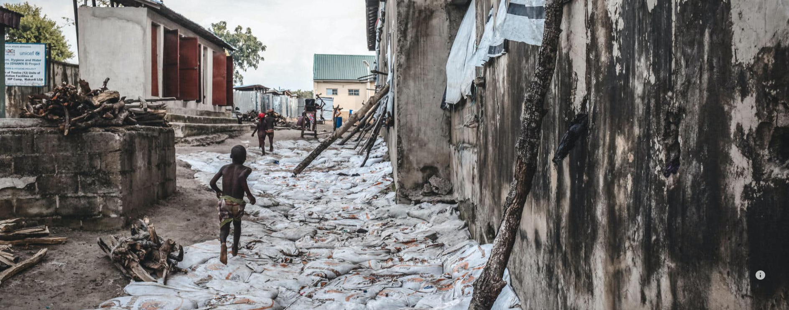

"When I think about going home, I remind myself that a live dog is better than a dead lion"
Nigeria’s ‘middle belt’ states, Adamawa, Benue, Kaduna, Plateau, Nasarawa and Taraba, host the largest numbers of internally displaced people (IDPs) in the country, outside of the northeast region. Most people have been uprooted by the so-called ‘farmer-herdsmen’ conflict. At least 160,000 displaced people are scattered across Benue state, according to 2019 estimates. Here, displaced communities, mostly farmers, are living in either one of eight official camps, or in informal camps or settlements – such as markets or schools – or are residing with families in the host community (i.e. with people who were already settled in the area). The official estimates do not yet include many thousands more people who have been displaced in 2020. In addition, there are more than 58,400 Cameroonian refugees living in Nigeria – mostly in middle belt states; more than 8,000 of these people are in Benue.

The farmer-herdsmen conflict
Although multi-layered and complex, the farmer-herdsmen conflict is in large part driven by competition for resources, in particular food and water. Migratory herders are being pushed ever further south in search of land for their cattle to graze upon. Some of the underlying causes include environmental degradation and the impacts of climate change, such as desertification, reducing available fertile land. In addition, ongoing violence and insecurity in traditional grazing areas in the north is forcing many herders to flee. The land that herders settle on, however, is claimed by farmers. In 2018, a sudden violent escalation of previously seasonal clashes between herdsmen and farmers, forced an estimated 300,000 people from their homes and killed 1,300.
Return is nowhere in sight Despite the challenges, none of the people we speak to think they can go home, at least not in the short-term. “When I think about going home, I remind myself that a live dog is better than a dead lion,” says Ugber Emmanuel in Mbawa camp. “There have been others who tried to return to their villages and were killed. We have no hope for now, but perhaps one day.” Many people talk about the challenges in adapting to their new lives. “You no longer have the comforts of home. You don’t just share with family, you share with everyone and nothing is ours” says Oussange, an elderly woman in Mbawa camp.